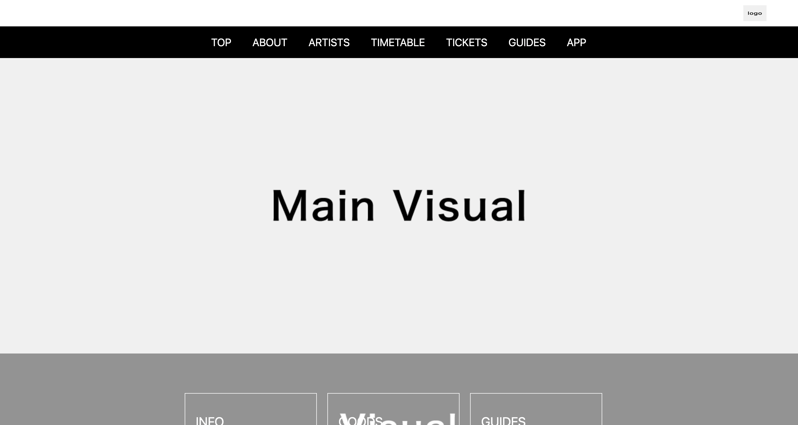
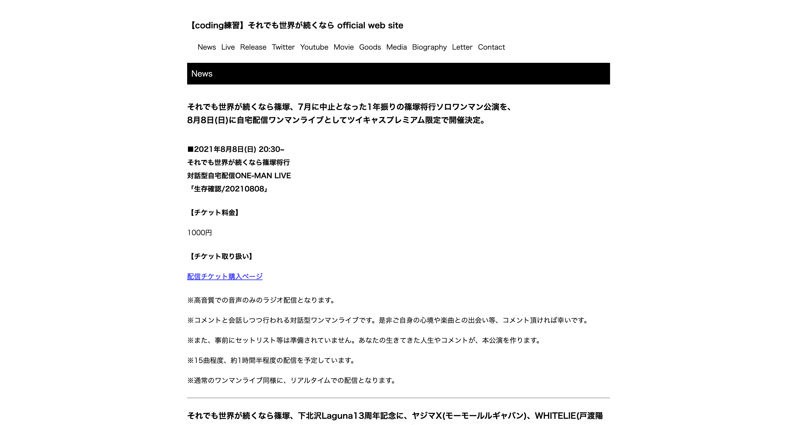
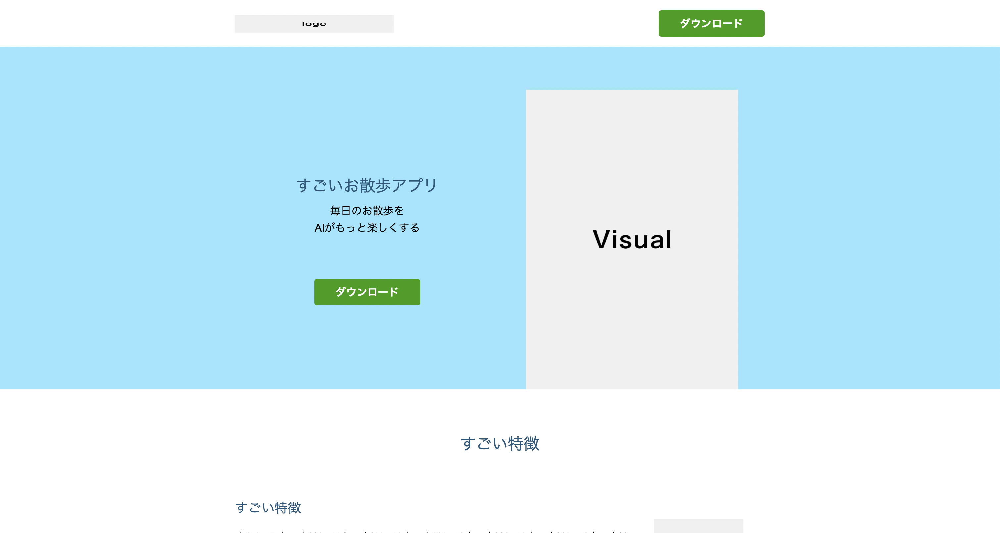
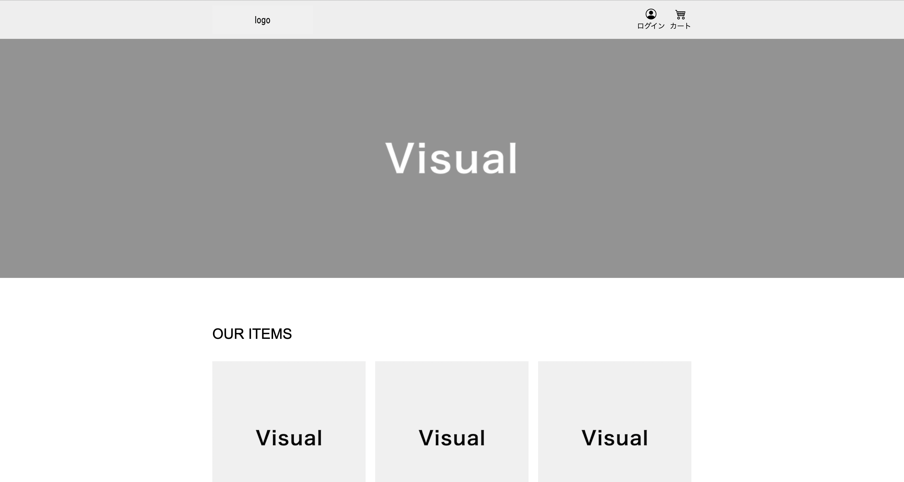

Practice Cording

「ROCK IN JAPAN FES 2021」練習
「ROCK IN JAPAN FES 2021」のホームページを真似して、HTML・CSSで作りました。

「それでも世界が続くなら official web site」練習
「それでも世界が続くなら official web site」を真似して、HTML・CSSで作りました。

ドットインストール練習
ドットインストールの「実践!アプリ紹介ページを作ろう」を見て、HTML・CSSで作りました。

ドットインストール練習
ドットインストールの「実践!ECサイトをマークアップしよう」を見て、HTML・CSSで作りました。